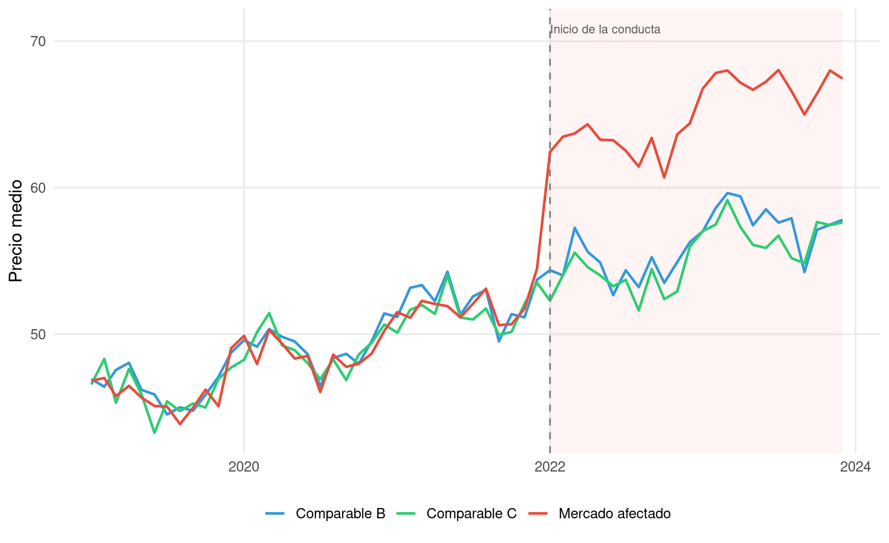

6.1 Mirar fuera para saber qué habría pasado dentro
Cuando el historial de la propia víctima no basta para construir un contrafactual convincente, el perito necesita salir de la empresa, del mercado o del territorio afectado y buscar una referencia externa. Esa es la lógica del método de comparables, también llamado yardstick: medir el daño observando cómo evolucionó una unidad semejante que no sufrió la conducta ilícita.
La fuerza de este método radica en una intuición muy poderosa, y muy persuasiva ante tribunales: si dos empresas, dos mercados o dos grupos de clientes eran comparables antes de la infracción, y solo uno de ellos fue afectado por la conducta, la evolución del no afectado ofrece una referencia razonable sobre lo que habría ocurrido en ausencia del ilícito. En otras palabras, el contrafactual no se extrae del pasado de la víctima, sino del presente de otros agentes económicos que funcionan como espejo.
Sin embargo, la potencia del método depende por completo de una palabra que en la práctica se usa con demasiada ligereza: “comparable”. Dos entidades no son comparables porque pertenezcan al mismo sector o porque ambas vendan productos parecidos. Lo son cuando comparten los determinantes económicos relevantes de la variable que se quiere explicar: estructura de costes, condiciones de demanda, marco regulatorio, intensidad competitiva, calidad del producto, exposición al ciclo y composición de la clientela. El perito que no demuestra esa comparabilidad está construyendo su cuantificación sobre un espejo deformante.
6.2 La intuición del método
La versión más sencilla del método puede explicarse así. Supongamos que una empresa afectada por una práctica anticompetitiva opera en un mercado regional. Existe otra región, no afectada por la conducta, con un mercado similar en tamaño, estructura de costes, características de la demanda y regulación. Si los precios en ambas regiones se movían de forma paralela antes de la infracción y, a partir de determinado momento, los precios de la región afectada se separan al alza, la evolución de la región no afectada sirve como yardstick para estimar el precio contrafactual.
Esta misma lógica puede aplicarse a ventas, beneficios, márgenes o cuotas de mercado. Un competidor no afectado puede servir de benchmark para una empresa denigrada. Un grupo de clientes no expuesto a una práctica discriminatoria puede servir de referencia para los clientes afectados. Un país o una comunidad autónoma no alcanzados por una colusión puede servir de control geográfico para los territorios afectados.
Code
set.seed(206)n <-60fecha <-seq.Date(as.Date("2019-01-01"), by ="month", length.out = n)t <-1:ninicio_infraccion <-as.Date("2022-01-01")coste_comun <-50+0.35* t +3*sin(2* pi * t /12) +rnorm(n, 0, 1.2)demanda_comun <-100+0.4* t +2*cos(2* pi * t /12) +rnorm(n, 0, 1.5)precio_B <-12+0.6* coste_comun +0.03* demanda_comun +rnorm(n, 0, 0.8)precio_C <-13+0.58* coste_comun +0.028* demanda_comun +rnorm(n, 0, 0.8)sobrecoste_cartel <-ifelse(fecha >= inicio_infraccion, 8+0.10* (t -36), 0)precio_A <-12.5+0.59* coste_comun +0.029* demanda_comun + sobrecoste_cartel +rnorm(n, 0, 0.9)df_comp_plot <-tibble(fecha = fecha,`Mercado afectado`= precio_A,`Comparable B`= precio_B,`Comparable C`= precio_C) |>pivot_longer(-fecha, names_to ="serie", values_to ="precio")ggplot(df_comp_plot, aes(x = fecha, y = precio, color = serie)) +annotate("rect",xmin = inicio_infraccion, xmax =max(fecha),ymin =-Inf, ymax =Inf,fill ="#e74c3c", alpha =0.06) +geom_line(linewidth =0.9) +geom_vline(xintercept = inicio_infraccion, color ="grey50", linetype ="dashed") +annotate("text", x = inicio_infraccion, y =max(df_comp_plot$precio) +2.8,label ="Inicio de la conducta", hjust =0, size =3.1, color ="grey35") +scale_color_manual(values =c("Mercado afectado"="#e74c3c","Comparable B"="#3498db","Comparable C"="#2ecc71" )) +labs(x =NULL, y ="Precio medio", color =NULL) +theme_minimal(base_size =13) +theme(legend.position ="bottom", panel.grid.minor =element_blank())

Figure 6.1: Intuición del método de comparables: el mercado afectado se separa de los mercados de control tras el inicio de la conducta, que actúan como yardstick del contrafactual
La Figure 6.1 muestra con claridad esta lógica. Antes de la conducta, el mercado afectado y los comparables se mueven de forma muy parecida. Tras el inicio de la infracción, el mercado afectado comienza a separarse sistemáticamente de los mercados de control. Esa divergencia no se interpreta automáticamente como daño, pero sí constituye el punto de partida del análisis: si la comparabilidad previa está bien justificada, la brecha posterior es la mejor aproximación empírica al perjuicio causado.
6.3 Qué hace que un comparable sea realmente comparable
La selección del comparable es la decisión más importante del método. De ella depende no solo la precisión de la cuantificación, sino su credibilidad procesal. En mi experiencia, una gran parte de los errores periciales en este terreno no proviene de la regresión, sino de una mala elección del grupo de control.
Un comparable adecuado debe parecerse a la unidad afectada en los factores que determinan la variable dañada. Si lo que se cuantifica es un sobreprecio, el comparable debe compartir una estructura de costes, una elasticidad de demanda y una regulación similares. Si lo que se estima es un lucro cesante, la comparación debe extenderse a la política comercial, la intensidad competitiva, el mix de clientes y la capacidad de la empresa.
Code
tibble(`Criterio de comparabilidad`=c("Producto o servicio similar","Estructura de costes comparable","Demanda y perfil de cliente similares","Marco regulatorio equivalente","Intensidad competitiva parecida","Serie temporal suficientemente larga","Ausencia de contaminación por la conducta" ),`Qué debe comprobar el perito`=c("Calidad, especificaciones, posicionamiento","Materias primas, costes laborales, logística","Elasticidad, poder adquisitivo, patrones de compra","Precios regulados, límites legales, acceso a insumos","Número de competidores, cuotas, barreras de entrada","Cobertura del período pre y post infracción","Que el comparable no esté afectado, directa o indirectamente" ),`Señal de alerta`=c("Comparar bienes solo nominalmente parecidos","Mercados con shocks de costes distintos","Clientes con comportamiento radicalmente diferente","Mercados sujetos a normativas no equivalentes","Comparar monopolio local con mercado atomizado","Período previo demasiado corto o con huecos","Comparable contaminado por el mismo cartel o por spillovers" )) |>kbl(booktabs =TRUE, escape =FALSE) |>kable_styling(latex_options =c("hold_position", "scale_down"),full_width =TRUE, font_size =9) |>column_spec(1, bold =TRUE, width ="4cm") |>column_spec(2, width ="5cm") |>column_spec(3, width ="5cm")
Table 6.1: Criterios para la selección de comparables y señales de alerta en la práctica pericial
Criterio de comparabilidad
Qué debe comprobar el perito
Señal de alerta
Producto o servicio similar
Calidad, especificaciones, posicionamiento
Comparar bienes solo nominalmente parecidos
Estructura de costes comparable
Materias primas, costes laborales, logística
Mercados con shocks de costes distintos
Demanda y perfil de cliente similares
Elasticidad, poder adquisitivo, patrones de compra
Clientes con comportamiento radicalmente diferente
Marco regulatorio equivalente
Precios regulados, límites legales, acceso a insumos
Mercados sujetos a normativas no equivalentes
Intensidad competitiva parecida
Número de competidores, cuotas, barreras de entrada
Comparar monopolio local con mercado atomizado
Serie temporal suficientemente larga
Cobertura del período pre y post infracción
Período previo demasiado corto o con huecos
Ausencia de contaminación por la conducta
Que el comparable no esté afectado, directa o indirectamente
Comparable contaminado por el mismo cartel o por spillovers
La Table 6.1 resume los criterios que deberían guiar esta selección. Ningún comparable será idéntico a la víctima —si lo fuera, sería la propia víctima—, pero la tarea del perito consiste precisamente en justificar por qué las diferencias existentes no invalidan la comparación. En algunos casos, bastará con una elección cuidadosa del control. En otros, será necesario complementar el yardstick con ajustes econométricos explícitos para corregir esas diferencias.
6.4 La idea econométrica: del benchmark simple al ajuste por regresión
La forma más básica del método consiste en utilizar un comparable puro: una empresa, mercado o grupo de clientes cuya evolución se toma como referencia, ajustando si es necesario la diferencia de nivel observada en el período previo.
Si \(Y_t^A\) es la variable del mercado afectado y \(Y_t^C\) la de un comparable, una versión simple del contrafactual puede escribirse como:
donde \(\overline{\Delta}_{pre}\) es la diferencia media entre la unidad afectada y el comparable durante el período previo. La lógica es clara: si antes de la infracción el mercado afectado tenía un nivel estable de precios o ventas ligeramente distinto al comparable, ese diferencial histórico se mantiene y se suma a la evolución del control durante el período posterior.
El daño, en términos de la variable analizada, vendría dado por:
\[
D_t = Y_t^A - \widehat{Y}_t^{A,0}
\]
si se trata de un sobreprecio, o por la expresión inversa si se trata de ventas perdidas o lucro cesante.
Esta versión pura del método es extremadamente transparente, pero en muchos casos resulta demasiado simple. Las diferencias entre la víctima y el comparable rara vez se reducen a un simple desplazamiento constante. Por eso, en la práctica pericial suele recurrirse a una formulación de regresión con variables de control:
donde \(X_{it}\) recoge variables observables que afectan al resultado —costes, demanda, características del producto— y \(C_{ji}\) representa indicadores de mercado, empresa o cliente. Estimado el modelo sobre unidades no afectadas o sobre el período previo, el perito puede predecir la trayectoria contrafactual de la unidad afectada en ausencia de la conducta.
Code
# Ejemplo orientativo de regresión yardstick con controlesmodelo_yardstick <-lm(precio ~ coste + demanda +factor(mercado),data = datos |>filter(fecha < inicio_infraccion))contrafactual_afectado <-predict( modelo_yardstick,newdata = datos |>filter(mercado =="Afectado", fecha >= inicio_infraccion))
La frontera entre comparables y diferencias en diferencias no siempre es tajante. Cuando el yardstick utiliza comparables observados antes y después de la conducta y explota explícitamente la interacción entre grupo afectado y período posterior, el análisis se aproxima a un DID. La diferencia conceptual que importa aquí es otra: en el método de comparables, la credibilidad del contrafactual descansa ante todo en la calidad del benchmark externo.
6.5 Implementación en R: estimación del contrafactual con comparables geográficos
Para ilustrar el método, utilizaremos los tres mercados simulados de la figura anterior. El mercado A es el afectado por la conducta. Los mercados B y C actúan como comparables. En el período previo, la diferencia media entre A y el promedio de B y C es relativamente estable. El contrafactual postinfracción se construye trasladando al período posterior esa relación histórica.
Table 6.2: Estimación del daño con comparables geográficos
Meses afectados
Sobreprecio medio
Cantidad media
Daño monetario total
24
9.54
101.4
23155.7
La Table 6.2 resume el resultado del ejercicio. Primero se estima el sobreprecio medio en cada período como la diferencia entre el precio observado en el mercado afectado y el contrafactual derivado del yardstick. Después, ese sobreprecio se monetiza multiplicándolo por la cantidad adquirida. Esta segunda operación es esencial: una brecha de precios, por sí sola, no es todavía una cuantificación de daños; es solo uno de sus componentes.
Figure 6.2: Brecha entre el mercado afectado y el contrafactual derivado del comparable promedio
La Figure 6.2 permite ver con nitidez la brecha que el método transforma en sobreprecio. Lo importante aquí no es solo que exista una diferencia posterior, sino que la relación entre el mercado afectado y los comparables fuera razonablemente estable en el período previo. Sin esa estabilidad previa, el yardstick pierde gran parte de su fuerza probatoria.
6.6 Relevancia jurídica del método
La Guía Práctica de la Comisión Europea menciona expresamente los métodos comparativos como una de las aproximaciones más naturales a la cuantificación del daño. Su atractivo jurídico es evidente: el tribunal no tiene que aceptar una hipótesis puramente abstracta sobre lo que habría ocurrido, sino observar cómo evolucionó otra unidad que puede servir como referencia empírica.
Este método es especialmente frecuente en litigación de cárteles y abusos de posición dominante. En cárteles, los comparables suelen ser geográficos o temporales: otros territorios no cartelizados, otros períodos sin colusión o productos cercanos no afectados por el acuerdo. En supuestos de abuso, el comparable puede ser una empresa rival no excluida, un mercado aguas abajo no afectado o un grupo de clientes tratados de forma distinta.
Su principal virtud procesal es la intuición. Su principal riesgo jurídico es la impugnación de la comparabilidad. La parte contraria raramente discutirá que el método es válido en abstracto; discutirá que el comparable elegido no lo es. Por eso, en un informe pericial, la justificación del benchmark ocupa un lugar tan importante como la propia estimación del daño.
6.7 Sensibilidad: qué ocurre cuando cambia el benchmark
El análisis de sensibilidad en un yardstick gira en torno a una pregunta elemental: ¿cambia mucho el resultado cuando cambia el grupo de control? Si la cuantificación depende por completo de un único comparable, el tribunal debe desconfiar. Si, por el contrario, el resultado se mantiene en un rango razonable al utilizar benchmarks alternativos, la credibilidad del método aumenta.
Table 6.3: Análisis de sensibilidad del método de comparables según el benchmark elegido
Benchmark
Sobreprecio medio
Daño total
Solo comparable B
9.30
22566.3
Solo comparable C
9.78
23745.1
Promedio B + C
9.54
23155.7
La Table 6.3 muestra el tipo de evidencia que conviene ofrecer al tribunal. Si el daño calculado con el comparable B, con el comparable C y con el promedio de ambos se mantiene en un rango razonablemente estrecho, el perito puede defender con mucha mayor seguridad que el resultado no depende de una elección arbitraria.
6.8 Errores frecuentes en el uso del yardstick
El primer error, y el más dañino, es utilizar como comparable algo que solo lo es en apariencia. Un mercado puede vender el mismo producto y, sin embargo, estar sometido a un régimen regulatorio distinto, a shocks de costes diferentes o a una composición de clientes completamente divergente. En ese caso, el benchmark deja de ser yardstick y se convierte en ruido.
Un segundo error consiste en no justificar por qué el comparable no está contaminado por la conducta. En casos de cártel, este problema es especialmente serio. Un mercado geográfico aparentemente no afectado puede haber sufrido efectos indirectos de la colusión —por ejemplo, a través de arbitrajes, estrategias comerciales coordinadas o transmisión de precios. Un comparable contaminado tiende a reducir artificialmente la magnitud del daño y puede hacer que el yardstick parezca más benigno de lo que realmente es.
Un tercer error es confundir diferencia de nivel con comparabilidad. Que dos series estén próximas no significa que respondan a los mismos determinantes. La verdadera prueba está en la estabilidad de la relación previa y en la consistencia económica del benchmark, no en la mera proximidad visual.
El cuarto error es no monetizar adecuadamente la brecha. En casos de sobreprecio, el daño no es la diferencia de precios sin más, sino esa diferencia multiplicada por las cantidades afectadas, teniendo en cuenta además, cuando proceda, el efecto volumen y el posible passing-on. El yardstick produce primero una brecha contrafactual; la cuantificación del daño exige convertir esa brecha en euros.
6.9 Qué debe retener un tribunal de este método
Un tribunal no necesita recordar toda la notación econométrica del yardstick, pero sí una idea esencial: el método de comparables se apoya en un espejo externo. Si ese espejo es bueno, el contrafactual es muy persuasivo. Si ese espejo está deformado, la cuantificación también lo estará.
Por eso, en este método, la pregunta decisiva no es únicamente cuánto daño estima el perito, sino contra quién o contra qué está comparando. La calidad del comparable no es un detalle técnico secundario: es el núcleo del método. Cuando el perito logra justificar esa comparabilidad de forma convincente y mostrar además que el resultado es robusto a benchmarks alternativos, el yardstick se convierte en una de las herramientas más eficaces de toda la cuantificación de daños.